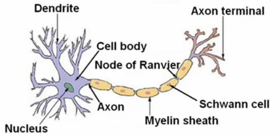

Three things to notice
Cell body
Number of input wires (dendrites)
Output wire (axon)
Simple level
Neurone gets one or more inputs through dendrites
Does processing
Sends output down axon
Neurons communicate through electric spikes
Pulse of electricity via axon to another neurone
